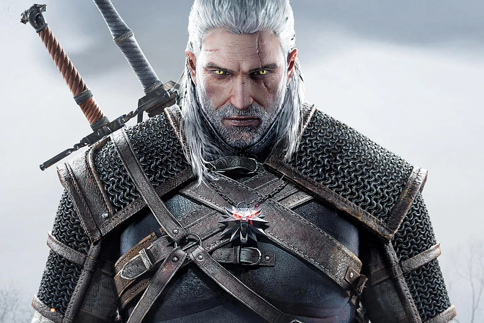

About Me
— I, Geralt of Rivia, nicknamed by "White Wolf" , a witcher from the Wolf School in Kaer Morhen, the kingdom of Kaedwen, The Neverland world. A living legend of the entire North. Monsters Hunter. Passed the Trial of Herbs, overcame mutations and training, destroyed countless monsters and beasts of the entire bestiary of the Continent. I have an incredibly huge numbers of closed contracts, of which the most famous are: lifting the curse imposed on Princess Adda; expulsion of the genie from Rinda; victory in a battle with the demon-Gunter O'Dim; kill the king of the Wild Hunt-Eredin Breakk Glas; ridding Toussaint of Bokler Beast - higher vampire Detlaff.
Мій досвід
-
24 Лютого 2022 – понині
Захист України в ТерОбороні "Wolf"
Створення та використання саморобної РСЗВ "Відьмак"
Розробка в CDPR ремейку першого Відьмака
Розробка в CDPR next-gen версії The Witcher 3 на PS5
Участь у Fortnite Chapter 4
-
1го січня 2020 – 31 грудня 2021
Позбавлення прокляття корони
-
- пошук першого зарадженного в Ухані
- втеча з кнр
-
- тестування зелених мутагенів для збільшення здоров'я,
- тестування синіх мутагенів для збільшення мани
- тестування червоних мутагенів для збільшення атаки організму від прокляття
- розширення штату відьмаків для прискорення пошуку нових інгридієнтів
- хаотичне змішування різних мутагенів за допомогою Єнніфер та отримання вакцин різних шкіл відьмаків
-
Розробка вакцин
-
- Розробка вакцини школи Вовка
- Розробка вакцини школи Кота
- Розробка вакцини школи Ведмедя
- Розробка вакцини школи Грифона
- Розробка вакцини школи Змії
- Розробка вакцини школи Мантикори
-
-
-
5го квітня 2019 - 31го грудня 2019
Просування мене
-
(Не зовсім розумію, що вони про мене пишуть, але це працює)
- Просування в соцмережах
- Розробка портфоліо
- Робота над моїм іміджем
- Пошук монстрів
- Пошук фан клубів
-
-
2го січня 2019 – 2го квітня 2019
Робота продавцем-консультантом в магазині Citrus
-
(За допомогою знака Аксій , продавати не так вже й складно)
- Найкращій продавець тижня
- Найкращій продавець місяця
- Найкращій продавець 2019 року
- Підвищення до головного продавця магазину
- Підвищення до адміністратора
- Переведення роботи на пасивний дохід
- Пошук роботи
-
-
7 червня 1276 – 1 січня 2019
Телепортація у часі завдяки Єнніфер з Венгербергу
-
- Перша спроба телепортації у часі
- Телепортація у часі на годину вперед
- hotfix формули Єнніферр
- Другий стрибок у часі
- Телепортація у 2019 рік
-
-
1275-1276
Події коміксу The Witcher:Fading Memories
-
- Робота рибалкою в Повісі
- Замовлення на туманників від мера Бадрейну
- Друге замовлення на туманників у Бадрейні
- Розслідування в Гладсько(Повіс)
- Повернення в Бадрейн до вежі мага. Геральт дізнається, що все у Бадрейні – ілюзія старого мага
-
-
1275
-
- Приїзд у Туссен на прохання княгині Анни Генрієти
- Допомога у розслідуванні вбивств Боклерської бестії
- Участь у лицарському турнірі
- Пошук лабораторії Моро
- Отримання нових мутацій
- Допомога Туссентські виноробні з монстрами. Для Геральта роблять іменне вино
- Ліквідації угруповань Ганзи
- Участь захисту міста Боклер від нападу вампірів
- Порятунок Сіанни від Детлаффа
- Перемога над Детлаффом
- Замовлення на Оріанну
-
-
1273
-
- Замовлення в корчмі "Сім котів"
- Знаходження Лютика з скринею з офірськими рунами
- Політ у скрині з Лютиком до Офіру
- Розслідування вбивства наложниці за наказом султана Нібраса
- Геральт вбиває ассасина султана
- Пошук грибів у печері
- Поліпшення меча в майстерні Аамада
- ВБивство демона)
-
-
1272
-
- Пошук Єнніфер в селі Вербиці
- Пошук Єнніфер в селі Білий Сад
- Замовлення на грифона в Білому Саду
- Зустріч з імператором Нільфгаарду - Емгиром вар Емрейсом, що танцує під Курган і Агрегат в замку Визіма
- Пошук Цирі у Велені, Новіграді та Скеллізі
- Допомога Кровавому барону в селі Врониці в пошуках його сім'ї
- Допомога відьмі Кейрі Метц
- Допомога Тріс та чаклунам в Новіграді
- Допомога у пошуках вкраденого скарбу Сігі Ровера
- Зустріч з королем Реданії Радовидом V Лютим
- Вбивство голови мисливців за відьмами
- Вбивство Убл@дка Молодшогоо
- Порятунок Лютика
- Допомога Лютика з кабаре. Замовлення на вбивцю Прісцилли
- Допомога у розслідуванні трагедії під час бенкету в Каер Трольді
- Допомога у виборах нового конунга островів Скелліге
- Розчарування Аваллак'ха в Каер Морхені
- Цирі знайдена на острові Туманів
- Битва в Каер Морхені з Диким Гоном
- Вбивство відьом із Кривоухових боліт на Лисій горі під час шабашу
- Геральт вбиває Імлеріха
- Подорож по світам з Авалакхом
- Участь у перевороті на короля Реданії. Смерть Радовида У Лютого
- Битва у водах островів Скелліге між Диким Полюванням, Нільфгаардом та кланами Скеллізі
- Геральт вбиває короля Дикого Полювання-Ередіна Бреакк Гласа
- Замовлення на жабу від Ольгерда фон Еверика
- Убийство принца-жабы в Оксенфуртских каналах
- Зустріч зі склянною людиною - демоном Гюнтером о Діммом
- Порятунок із корабля офірців
- Допомога Ольгерду у його трьох бажаннях
- Участь у пограбуванні аукціонного будинку Борсоді у Новиграді
- Участь у весіллі разом із Шані
- Пошук троянди Ольгерда фон Еверека
- Знищення лицарів Ордену Палаючої Троянди
- Перемога над Гюнтером. Порятунок Ольгерда фон Еверека
- Замовлення на допплера та стригу в Новиграді разом з Єнніфер та Цірі
-
-
1271
-
- Втеча від Дикого Гону за допомогою Цирі
- Повернення в Каер Морхен
- Відбивання атаки угруповання Саламандр на Каер Морхен
- Пошук та переслідування Саламандр
- Геральт вьває Азара Яведа
- Супровід короля Темерії Фольтеста при облозі замку Ла-Валет. Участь в його штурмі
- Розслідування вбивства короля Фольтеста
- Пошук вбивць Фольтеста
- Замовлення на кейрана поблизу Флотзама
- Розчарування прокляття Сабрини у Вергені
- Допомога Саскії У Вергені
- Участь у зібрані в Лок Муінні
- Порятунок чарівниці Філіппи Ейльхарт від рук реданців
- Порятунок Тріс та принцеси Анаїс від нільфгаардців
- Геральт вбиває Лето , вбивцю королів
-
-
1269-1271
Дикий Гін нападает на острів Яблунь і викрадає Єнніфер. Переслідування Дикого Гону
-
-
-
Навчання Цирі у Каер Морхені. Приїзд Трісс Мерігольд із Марібору
-
Подорож на південь. Лікування Трісс від отруєння
-
Навчання Цирі у Єнніфер
-
Пошук мага-ренегату
-
Робота з охорони барків. Напад солдатів Темерії на Геральта. Втеча в Оксенфурт
-
Зустріч з Шані в Оксенфурті
-
Пошук мага-ренегату
- Контракт на королівську мантикору
- Контракт на перевертня
- Контракт на туманника
- Танеддский бунт. Нільфгаард починає Другу Північну війну
- Битва зі зрадником Капітули чарівників Вільгефорцем
- Лікування у Брокилоні
- Мандрівки за Цирі із Золтаном, Лютиком та Регісом. Темерці беруть під варту і конвоюють у форт Армерія
- Втеча з форту, Регіс рятує Лютика
- Участь у битві за міст на Ярузі вході Другої Північної Війни за бік королівства Лірії та Рівії під проводом королеви Меви
- Дорога до друїдів Каед Дху
- Дружина Геральта супроводжує бортників як ескорт
- Геральт рятує агуару
- Приїзд до міста Рідбрун. Дружина поділяється дорогою до Бельхавена.
- Геральт рятує Кагира
- Сутичка з розбійниками у Каед Мирвіді
- Приїзд до Туссену. Серія відьмачих замовлень
- Пошук Єнніфер у замку Стигга
- Геральт вбиває Вільгефорца
- Погром в Ривії , Цирі рятує Геральта та Єнніфер
-
-
-
1261-1263
-
- Проживання з Єнніфер в Аед Гінваель
- Сутичка з чаклуном Істреддом
- Пригоди Геральта та Лютика у Новиграді
- Контракт у Бремервоорді як перекладач
- Знаходження підводного міста. Сутичка з риболюдьми
- Пошук маленької Цирі в Брокилоні
- Зустріч з матерю Геральта-Вісенной у Верхньому Соддені
- Пошук Єнніфер після Содденської битви
- Геральт вивозить Цирі до Каэр Морхену
-
-
1255-1261
-
- Спільне проживання з Єнніфер у її будинку у Венгерберзі
- Втеча від Єнніфер
- Контракт у Кераку. Потрапляння до в'язниці, викуп чарівницею Корал
- Зникнення мечів. Допомога чарівникам у Рісберзі
- Дорога в місто Новіград через річку Понтар. Події коміксу "Відьмак. Лисячі діти"
- Невдача у Новиграді
- Повернення до Керака з Новиграда
- Переворот та повінь у Кераку
- Єнніфер повертає мечі
- Дорога у Визіму за контрактом на стригу
- Розчаклування принцеси Адди
- Лікування в Елландері після замовлення на стригу
- Полювання на дракона у Каїнгорні. Зустріч з Борхом
-
-
1254
-
- Риболовля з Любистиком. Знаходження глека з джинном, Любисток отримує травму шиї
- Пошук допомоги Лютику у місті
- Зустріч з Єнніфер з Венгерберга
- Потрапляння до в'язниці через Єнніфер
- Сутичка з Єнніфер (щасливий кінець)
- Джин вигнаний з Рінди
- Любистока врятовано
-
-
1253
Перша зустріч з Любистиком
Робота в Синіх Горах
Зустріч з ельфами Синіх Гір
-
1251
Бенкет з нагоди заручення принцеси Цинтри Паветти
-
1240
-
- Приїзд до Блавікена за замовленням на кікімору
- Зустріч із чарівником Стрігобором. Прохання Стрегобора вбити Ренфрі
- Зустріч із Ренфрі. Прохання Ренфрі вбити Стрегобора
- Сутичка з Ренфрі та її людьми
- Вбивство Ренфрі
- Відхід з Блавікена
-
-
1215-1235
Тренування Каэр Морхене під керівництвом вчителя Весеміра разом з Ламбертом та Ескелем
Перші контраки
Зустріч Нівелленом
-
~1215
Народження Геральта
Навички
Характер
СПЕЦИФІЧНЕ ПОЧУТТЯ Гумору, СТРИМАННІСТЬ, ПРЯМОЛИНІЙНІСТЬ, ЧЕСНІСТЬ, ГОСТРИЙ НА ЯЗИК, ТАЄМНИЧІСТЬ, МУДРІСТЬ, САРКАСТИЧНІСТЬ
ПОДОБАЮТЬСЯ
Не ПОДОБАЮТЬСЯ
Хочеться
ОСВІТА
-
Школа Вовка в Каэр Морхене